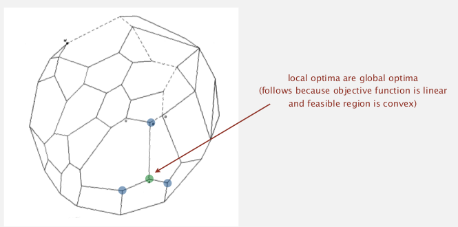
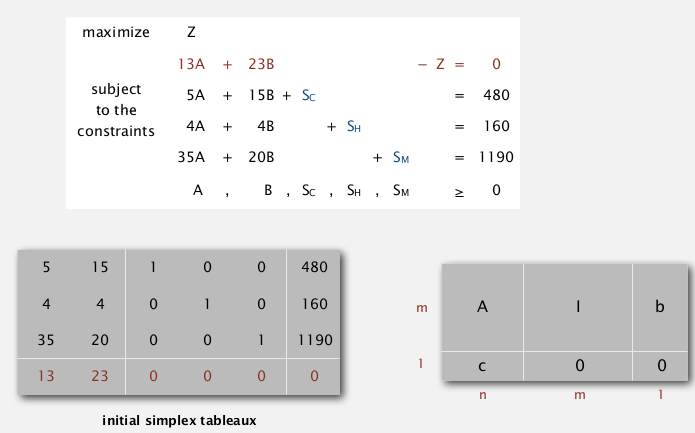
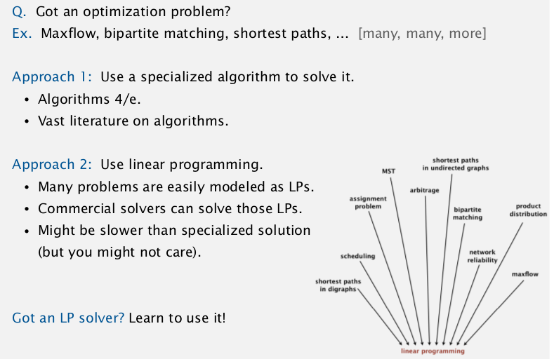

simplex algo: top 10 algo of the 20th century (ever?).
what is linear programming:
a general problem-solving model that works for:
shortest-path, maxflow, MST, matching, assignment, ...

1. Brewer-'s Problem
toy example: choose products to maximize profit.
...
feasible region: a convex polygon.

⇒ optimum solution appears at an extreme point.
standard form of LP
- n non-neg variables (j=1..n)
- m linear euqations (i=1..m)
- input: a_ij, c_j, b_i
- output: x_j

to convert inequality to equality (as in the standard form above): add slack var!

def. convex set
for any a and b in set ⇒ 1/2(a+b) is also in set.
extreme point:
def. extreme point
is a point in set that cannot be written as 1/2(a+b) with a b distinct.
extreme point property:
if there exists an potimal solution, then there exists one that is an extreme point.
- nb of extreme point is finite
- but this nb can be exponential
greedy property:
extreme point is optimal iff no better adj extreme points.

2. Simplex Algorithm
algo. simplex
- start at some point
- pivot from one extreme point to an adj one (never decrease the obj fcn)
- repeat until optimal
We're using the "basis" and "pivoting" to solve LP.
def. basis (基变量) is a subset (size=m) of the n variables.
vars in basis are always non-zero...
basic feasible solution:
- set n-m non-basis vars to 0
- solve for remaining m vars (with m constraints)
- if unique and feasible (matrix invertable)
algo:
- initial basic-feasible-solution: start slack vars as basis.
- choose a non-basic var as pivot, add it into basis, take some basis var out
ex. pick B as pivot var using constraint 2 (2nd equation):

- why picking var B? → its obj coeff is positive
- why pivot on 2nd constraint (5A+15B+Sc=480)? →
- RHS > 0 (preserves feasibility)
- minimum ratio rule: min(480/15, 160/4, 1190/20)
stop when no obj-coeff is positive
3. Simplex Implementations
encode standard LP formulation into java 2d array:

public class Simplex{
private double[][] a;
private int m,n;
public Simplex(double[][] A, double[] b, double[] c){
m = b.length;
n = c.length;
a = new double[m+1][n+m+1];
for(int i=0; i<m; i++)
for(int j=0; j<n; j++)
a[i][j] = A[i][j];
for(int j=n; j<m+n; j++) a[j-n][j] = 1;
for(int j=0; j<m; j++) a[j][n+m] = b[j];
for(int j=0; j<n; j++) a[m][j] = c[j];
}
}
simplex algo: just transform initial 2d array into final solution.
choosing pivot variable (find entering column)
Bland's rule. find the first column whose obj-coeff is positive.
private int bland(){
for(int q=0; q<m+n; q++)
if(a[m][q]>0) return q;
return -1;
}
choosing pivot constraint (find entering row)
minimum ratio rule (if a tie, choose first row).
private int minRatioRule(int q){
int p = -1;
for(int i=0; i<m; i++){
if (a[i][q]<=0) continue;
else if (p==-1) p=i;
else if (a[i][m+n]/a[i][q] < a[p][m+n]/a[p][q])
p=i;
}
return p;
}
do the pivot (column q, row p)
like Guassian elimination:
make var q disappear on each row (except for row p);
on row p: make var q's coeff become 1.
public void pivot(int p, int q){
for(int i=0; i<m; i++)
for(int j=0; j<m+n; j++)
if (i!=p && j!=q)
a[i][j] -= a[p][j]*a[i][q]/a[p][q];
for(int i=0; i<m; i++)
if(i!=p) a[i][q] = 0;
for(int j=0; j<m+n; j++)
if(j!=q) a[p][j] /= a[p][q];
a[p][q] = 1;
}
so the simplex algo is:
public void solve(){
while(true){
int q = bland();
if(q==-1) break; // optimal if -1
int p = minRatioRule(q);
if(p==-1) break; // unbounded if -1
pivot(p,q);
}
}
final solution is just in the array:

remarkable property
in typical applications, simplex terminates after at most 2(m+n) pivots. — whereas nb of extreme points is exp in n !!
ie. LINEAR time in practice!!
other pivot rules:

degeneracy
when choosing new basis, still stay in the same extreme point...

→ might cause cycling
→ bland's rule guarantees finite number of pivots
further improvement:

Best practice. Don't implement it yourself......

(AMPL是个好东西...)
算法的力量:


4. Linear Programming Reductions
reduction to std form (equalities)
- Minimization problem: max -1*obj
- ineq constraints: add slack var
- unbounded var X: replace with X=X0-X1, X0>=0, X1>=0
modeling of LP
- identify variables
- define constraints
- define objective fcn
- convert to std form
maxflow by LP
- variables: x_uv = flow on edge uv
- constraints: capacity, flow conservation
- obj: net flow to t

can use LP to solve mincost maxflow easily...
max cardinality bipartite matching by LP
input: bipartite graph
goal: max cardinatlity matching (set of vertex-disjoint edges)

can be reduced to maxflow (见algolab...)
- var: x_ij = indicator of person i assigned to job j (0<=x_ij<=1)
- constraints: vertex-disjoint
- obj: sum of all x_ij

non-trival: cause this is an INTEGER LP...
Th (Von Neumann) (and Poincare?..)
if all RHS=1 ⇒ all extreme points of the polyhedron have integer coord.
and many others...

the profound question: Is there a universal problem-solving model ?
→ P/NP...
"For the time being, the closest thing that we have to universal problem-solving model is LP "

Comments !